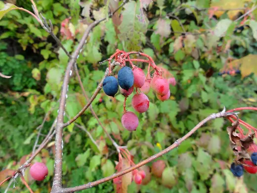

Desserts · Popular in Ontario
Nannyberry fruit leather
Nannyberry fruit leather is made with wild nannyberry, a favourite in Ontario.

How do you make nannyberry fruit leather?
Sieved nannyberry pulp dried into chewy leather.
Wild ingredients
- Nannyberry (Viburnum lentago): in season September to November
Watch the recipe

Video: Four Season Foraging on YouTube